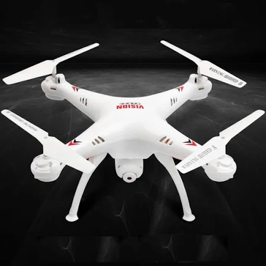

In today's agricultural landscape, there's a notable gap in real-time
monitoring and personalized care for plant health. This shortfall makes it
tough for farmers to quickly spot and tackle issues like pests, diseases,
or nutrient imbalances, ultimately impacting crop yields and quality. It's
crucial we ramp up our tech solutions and tailor-made strategies to fill
this void and boost agricultural productivity effectively.
Revolutionizing agricultural monitoring through innovative drone
technology equipped with infrared imaging capabilities, providing farmers
with real-time insights into crop health and enabling sustainable farming
practices.

We plan to do the analysis by making use of Normalized Difference
Vegetation Index(NDVI) obtained from the drone footage by following
steps.
Capture Images: Capture both infrared and visible light images of the
same plantation area. This can be done with specialized cameras such
as multispectral or near-infrared (NIR) cameras.
Preprocessing: Preprocess the images if required
NDVI Calculation: NDVI = (NIR-RED)/(NIR+RED) NIR: This is the
intensity of near-infrared light reflected by vegetation. RED: This is
the intensity of red light reflected by vegetation. This can be
extracted from the drone footage.
Normalize NDVI values: NDVI values typically range from -1 to 1, where
higher values indicate healthier vegetation. Normalize the NDVI values
to a scale that's easier to interpret. For example, you might scale
the values to a range of 0 to 1 or 0 to 100 for easier visualization.